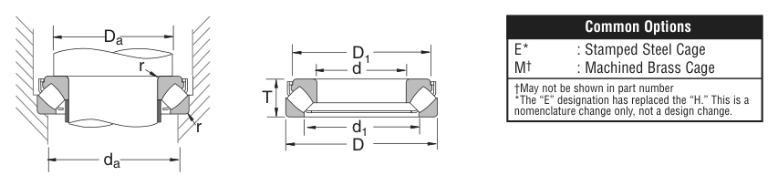

29376 is a NSK thrust bearing, bore 380 mm, O.D. 600 mm, height 132 mm, dynamic rating 742,000 lbs. Dimensions, drawing, interchanges and price.

Scanned from the manufacturer catalogue page listing this part number. All part numbers printed on that table share the same drawing.
Blue = inner / outer ring, yellow = rolling element. Drawn to scale from this part's own dimensions for selection reference only - not a manufacturing or assembly drawing.
| Symbol | Dimension | mm | inch |
|---|---|---|---|
| d | Bore diameter | 380 | 14.9606 |
| D | Outside diameter | 600 | 23.622 |
| C | Cup / outer-ring width | 62.992 | 2.48 |
| H | Height | 132 | 5.1969 |
Thrust bearing ratings are axial values Ca / Coa; T is the overall height. Weights are given in kg. Load ratings are shown in both the original catalogue units and the converted value (1 N = 0.2248 lbf). Data is provided for selection reference only - confirm against the latest official catalogue before ordering.
| Bore d (mm) | 380 |
|---|---|
| Bore d (in) | 14.9606 |
| Outside dia. D (mm) | 600 |
| Outside dia. D (in) | 23.6220 |
| Cup width C (in) | 2.480 |
| Height H (mm) | 132 |
| Height H (in) | 5.1969 |
| Bore d1 (in) | 22.362 |
| Outside dia. D1 (in) | 18.780 |
| Basic dynamic axial rating Ca (lbs) | 742000 |
|---|---|
| Basic static axial rating Coa (lbs) | 3260000 |
| Limiting speed - oil (rpm) | 560 |
| Weight (kg) | 140.614 |
|---|
| Chamfer r (in) | 0.197 |
|---|---|
| Shaft shoulder da min (in) | 20.669 |
| Housing shoulder Da (in) | 18.898 |
| C / P | Equivalent load P (N) | L10 (106 rev) | L10h at 100 rpm |
|---|---|---|---|
| 4 | 825,145 | 102 | 16,932 |
| 6 | 550,097 | 392 | 65,416 |
| 8 | 412,573 | 1,024 | 170,667 |
| 10 | 330,058 | 2,154 | 359,072 |
| 15 | 220,039 | 8,323 | 1,387,244 |
Basic rating life per ISO 281: L10 = (C/P)10/3 with C = 3,300,580 N. Hours = L10 x 106 / (60n). Life-modification factors for lubrication, contamination and temperature (aISO) are not included.
| Brand | NSK |
|---|---|
| Source catalogue | NSK inch product catalogue |
| Catalogue page | p.155 (dimensions) / p.156 (ratings) |
Dimensions in inches and millimetres, load ratings in lbs.
| Designation | Brand | Type | d | D | B/T | Dyn. rating | kg |
|---|---|---|---|---|---|---|---|
| 29276 | NSK | Thrust | 380 | 520 | 85 | 364,000 lbs | 52.163 |
| 29476 | NSK | Thrust | 380 | 670 | 175 | 1,080,000 lbs | 254.012 |
Send us the quantity you need and we will come back with price and lead time, normally within 24 hours. Equivalent parts from other brands can be quoted at the same time.